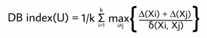
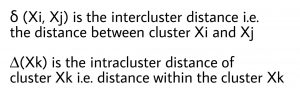

Gridsearch
For the detection of the optimal number of clusters, the python library clusteval is utilized to evaluate the goodness of clusters.
The clustering approaches can be set to agglomerative, kmeans, dbscan and hdbscan, for which the clusteval library then searches across the space of clusters and method-parameters to determine the optimal number of clusters given the input audio dataset.
Cluster evaluation can be performed based on:
Silhouette scores
DBindex
Derivative method
Let’s load an audio dataset and see how the different methods detect the optimal number of clusters.
from clustaudio import clustaudio
# Initialize with MFCC features
cl = clustaudio(method='mfcc', sr=22050)
# Load audio files
pathnames = cl.import_example(data='music')
# Or use your own audio collection
# pathnames = '/path/to/audio/files/'
Silhouette
The silhouette value is a measure of how similar a sample is to its own cluster (cohesion) compared to other clusters (separation). The scores range between [−1, 1], where a high value indicates that the audio file is well matched to its own cluster and poorly matched to neighboring clusters. The silhouette approach is thus a sample-wise approach, which means that for each audio file, a silhouette score is computed and if most samples have a high value, then the clustering configuration is appropriate. If many points have a low or negative value, then the clustering configuration may have too many or too few clusters. The silhouette can be calculated with any distance metric, such as the Euclidean distance or the Manhattan distance.
# Feature extraction and cluster evaluation
results = cl.fit_transform(pathnames, evaluate='silhouette', cluster='agglomerative')
# Or cluster using different (evaluation) method after initial fit
# labels = cl.cluster(evaluate='silhouette', cluster='agglomerative', cluster_space='high')
# Plot the cluster evaluation
cl.clusteval.plot()
# Scatter plot (will show waveforms if zoomed)
cl.scatter(zoom=3)
# Dendrogram
cl.dendrogram()
|
|


The silhouette plot shows the optimal number of clusters for the given audio data. The best cluster count is where the majority of clusters are above the average silhouette scores and does not widely fluctuate in the size of the silhouette plots. Note that the cluster evaluation is performed on the high-dimensional feature space (MFCC or spectral features). For illustration purposes, the 2D t-SNE space is shown and coloured on the detected cluster-labels.
|

Example with music clustering:
from clustaudio import clustaudio
# Initialize for music analysis
cl = clustaudio(method='mfcc-spectral', sr=22050, duration=30)
# Load music library
results = cl.fit_transform(
'/music/library/',
evaluate='silhouette',
cluster='agglomerative',
min_clust=3,
max_clust=15
)
# View cluster evaluation
cl.clusteval.plot()
# Scatter with audio point details
cl.scatter(dotsize=50)
print(f"Found {len(np.unique(results['labels']))} genres/moods")
DBindex
The Davies–Bouldin index (DBI) is a metric for evaluating clustering algorithms. This is an internal evaluation scheme, which means that the clustering result is evaluated based on the audio data clustered itself (internal information). The lower the value, the tighter the clusters and the separation between clusters.
 |
 |
# After the fit_transform you can directly try some other approaches for clustering
# without doing the preprocessing steps.
# Cluster differently using directly the extracted features.
results = cl.cluster(cluster='agglomerative', evaluate='dbindex')
# Scatter
cl.scatter()
# Dendrogram with cluster evaluation
cl.dendrogram()
|
|


The DBindex scores lower gradually and may stop at the maximum search space limit (default: 25 clusters). The search space can be altered using min_clust and max_clust in the function clustaudio.clustaudio.clustaudio.fit_transform().
Note that the cluster evaluation is performed on the high-dimensional feature space (MFCC, spectral, or combined features). For illustration purposes, the 2D t-SNE space is shown coloured on the detected cluster-labels.
Example with podcast speaker clustering:
from clustaudio import clustaudio
import vad
# Initialize for speech
cl = clustaudio(method='mfcc', sr=16000)
# Extract voice segments
segments = cl.extract_voice_segments('podcast.wav', method='webrtcvad')
# Cluster speakers using DBindex
results = cl.fit_transform(
segments['pathnames_segments'],
evaluate='dbindex',
cluster='agglomerative',
min_clust=2,
max_clust=10
)
cl.clusteval.plot()
print(f"Detected {len(np.unique(results['labels']))} speakers")
DBSCAN
Density-Based Spatial Clustering of Applications with Noise is a clustering approach that finds core samples of high density and expands clusters from them. This works especially well when having samples which contain clusters of similar density. This approach is recommended in combination with a low-dimensional space, such as the coordinates from t-SNE or UMAP.
- DBSCAN is particularly useful for audio clustering when:
The number of clusters is unknown
Outliers/noise audio files should be identified
Clusters have varying sizes
Working with embedded features (t-SNE coordinates)
# Feature extraction and cluster evaluation on the low-dimensional space
results = cl.cluster(evaluate='silhouette', cluster='dbscan', cluster_space='low')
# Scatter
cl.scatter()
# Dendrogram with cluster evaluation
cl.dendrogram()
|
|


|

Example with environmental sound clustering:
from clustaudio import clustaudio
# Initialize with spectral features (good for environmental sounds)
cl = clustaudio(method='spectral', sr=22050)
# Load environmental recordings
results = cl.fit_transform('/environmental_sounds/')
# Cluster using DBSCAN on low-dimensional space
labels = cl.cluster(
evaluate='silhouette',
cluster='dbscan',
cluster_space='low',
metric='euclidean'
)
# DBSCAN assigns label -1 to noise/outliers
n_clusters = len(np.unique(labels[labels >= 0]))
n_noise = np.sum(labels == -1)
print(f"Found {n_clusters} sound categories")
print(f"Found {n_noise} outlier/noise files")
# Visualize
cl.clusteval.plot()
cl.scatter(dotsize=75)
Clustering in Different Feature Spaces
clustaudio supports clustering in either high-dimensional or low-dimensional feature spaces:
- High-dimensional space (
cluster_space='high'): Uses original extracted features (MFCC, spectral, etc.)
More accurate for acoustic similarity
Better for large datasets
Recommended for most cases
- Low-dimensional space (
cluster_space='low'): Uses t-SNE/UMAP embedding coordinates
Faster computation
Better for DBSCAN
Useful for visualization-driven clustering
from clustaudio import clustaudio
cl = clustaudio(method='mfcc-spectral', sr=22050)
pathnames = listdir('/audio/', ext=['wav', 'mp3'])
# Extract features and compute embedding
results = cl.fit_transform(pathnames)
# Cluster in high-dimensional space (recommended)
labels_high = cl.cluster(
cluster='agglomerative',
evaluate='silhouette',
cluster_space='high',
min_clust=5,
max_clust=20
)
# Or cluster in low-dimensional space (useful for DBSCAN)
labels_low = cl.cluster(
cluster='dbscan',
evaluate='silhouette',
cluster_space='low'
)
print(f"High-dim clustering: {len(np.unique(labels_high))} clusters")
print(f"Low-dim clustering: {len(np.unique(labels_low))} clusters")
Distance Metrics
Different distance metrics can be used for clustering evaluation, each suitable for different types of audio features:
# Cosine similarity (good for MFCC and spectral features)
results = cl.fit_transform(
pathnames,
cluster='agglomerative',
evaluate='silhouette',
metric='cosine'
)
# Euclidean distance (general purpose)
results = cl.fit_transform(
pathnames,
cluster='agglomerative',
evaluate='silhouette',
metric='euclidean'
)
# Manhattan distance (robust to outliers)
results = cl.fit_transform(
pathnames,
cluster='agglomerative',
evaluate='silhouette',
metric='manhattan'
)
- Metric recommendations:
Cosine: Best for MFCC and spectral features (direction matters more than magnitude)
Euclidean: General purpose, works well for normalized features
Manhattan: Robust to outliers, good for noisy data
Complete ATC Example
Here’s a complete example showing cluster evaluation for Air Traffic Control communications:
from clustaudio import clustaudio, listdir
import vad
import numpy as np
# Initialize for speech (16kHz for radio)
cl = clustaudio(method='mfcc', sr=16000, mono=True)
# Get ATC files
atc_files = listdir('/ATC_recordings/', ext=['wav', 'mp3'])
# Enhance noisy audio
enhanced = cl.enhance_atc_audio(atc_files, method='aggressive')
# Separate voice from noise
separated = cl.separate_foreground_background(
enhanced['pathnames_enhanced'],
method='spectral_masking'
)
# Extract voice segments
segments = vad.batch_extract_voice_segments(
separated['pathnames_foreground'],
method='energy'
)
# Collect all segments
pathnames_voice = [
p for seg in segments
if seg.get("pathnames_segments")
for p in seg["pathnames_segments"]
]
# Cluster with evaluation
results = cl.fit_transform(
pathnames_voice,
evaluate='silhouette',
cluster='agglomerative',
metric='cosine',
min_clust=5,
max_clust=20
)
# View results
cl.clusteval.plot()
cl.clusteval.scatter(results['xycoord'])
cl.scatter(dotsize=50)
# Analyze clusters
n_clusters = len(np.unique(results['labels']))
print(f"\nFound {n_clusters} voice groups (speakers/controllers)")
for label in range(n_clusters):
count = np.sum(results['labels'] == label)
print(f" Cluster {label}: {count} segments")